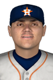

|
|
|  |
Astros Osuna Suffers Injury Monday, June 22nd, 2020 A blow for Roberto Osuna today -- team doctors confirmed he will miss 2 months with an elbow strain. Osuna suffered the injury throwing a pitch. Although officials from the Houston Astros are confident he'll make a full recovery, doubts will persist about Osuna's ability to return fully fit with an injury of this nature. This year Osuna has chalked up 21 relief appearances, worked 25.2 innings, struck out 22 and issued 4 walks. He has 11 saves with a 1.40 ERA and a 1-0 won-lost mark. |


|